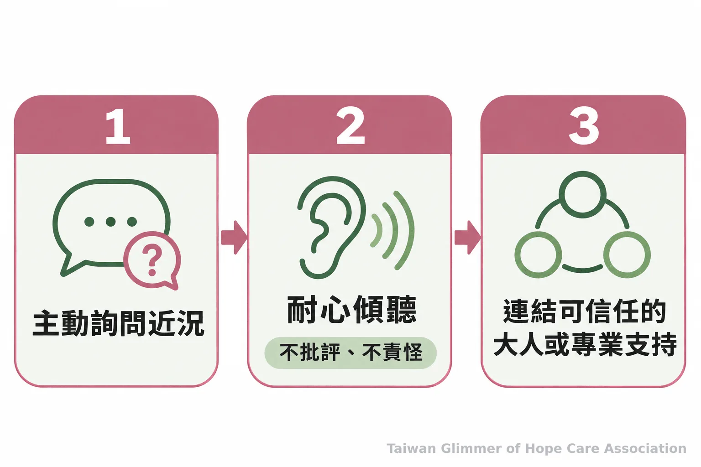
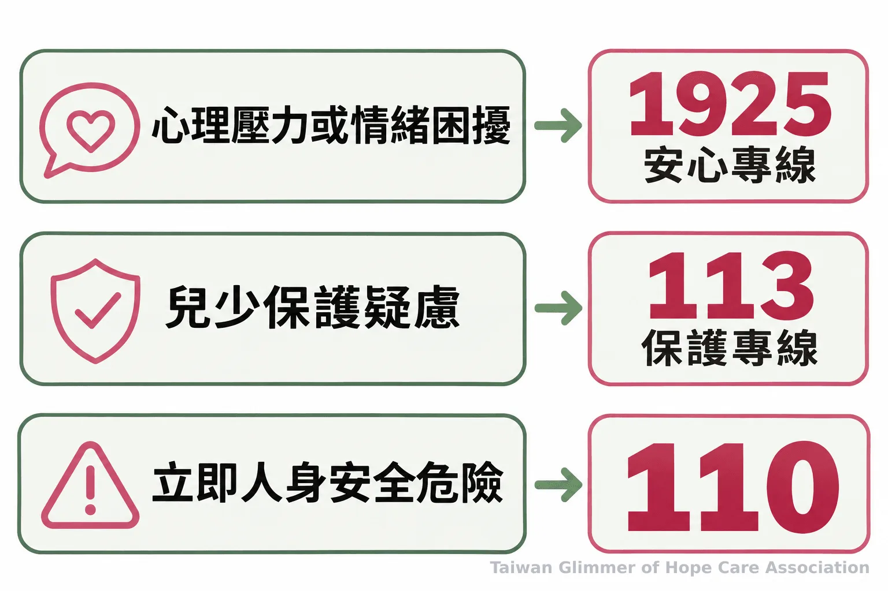

青少年求助指南：情緒訊號、成人陪伴與官方資源
情緒、作息、學業或交友的改變，可能是關心青少年的起點。從傾聽、自傷風險到1925、113與110，整理大人能做的陪伴與求助方式，也介紹微光的藝術陪伴課。
台灣微光希望關懷協會
微光專欄｜看見不同年紀的孩子｜系列一之 4
看見改變，先留一個關心的位置
情緒、睡眠、學業或交友若和以往不同，且持續影響生活，可以成為大人開口關心的起點；單一變化不能用來判定原因或診斷。
國中階段的孩子正在經歷身體、人際與生活節奏的變化。有時他不想多說，有時回答很短；也可能突然不參加原本喜歡的活動，常把自己關在房間，或出現缺課、作息改變、成績起伏。這些情形背後可能有不同原因，大人不必急著貼上「叛逆」或「故意」的標籤，也不宜只憑一項表現下結論。
關心可以從留意「和平常相比，有什麼不同」開始。若變化持續、孩子的日常受到影響，或他提到自傷、活著沒有意思，值得認真聽他說，並讓可信任的大人或專業人員一起提供支持。看見訊號不是診斷；它提醒身邊的人，孩子可能需要有人停下來聽。
開口時，描述觀察並讓孩子選擇怎麼說
找較少被打斷的時刻，說出自己觀察到的具體變化，再用開放的問題詢問近況；先聽孩子怎麼說，不急著批評、盤問或替他決定感受。
比起「你最近到底在鬧什麼」，可以說：「我注意到你這幾天比較少和大家吃飯，最近還好嗎？」或「你想談的時候，我可以陪你。」描述觀察，能讓對話從責備轉向關心。談話不必一次問完，也不需要馬上找到答案。
如果孩子說現在不想談，可以先尊重這個選擇，讓他知道之後仍能找你。大人也可以問：「你想自己待一下，還是希望我陪你找一位你信任的人？」若家長、老師或照顧者都在關心同一個孩子，溝通時應只分享支持所需的資訊，避免把孩子的私事傳給不相關的人。
孩子提到自傷或不想活時，保持平靜，直接關心他此刻是否安全，耐心聽，不追問方法或責怪他。衛生福利部以「一問、二應、三轉介」說明陪伴方向：主動詢問、耐心傾聽，再協助連結親友、安心專線、各縣市心理衛生中心或醫療機構。完整做法見衛福部的自殺防治懶人包與指引 PDF。
衛生福利部以「一問、二應、三轉介」整理陪伴方向：主動詢問、耐心傾聽，再協助連結支持資源。

微光怎麼做：在地據點的藝術陪伴課
微光走進已陪伴脆弱家庭孩子的在地單位上課，目前在瑞芳愛鄰、板橋明穗與中壢宣愛設有據點；每個據點每月安排一堂藝術陪伴課。課程從藝術家作品帶出情緒主題，不設標準答案，也不比較作品好壞。
課堂曾以「心情的顏色」邀孩子畫秘密花園，也從夏卡爾的「夢想花園」延伸到「壓力怪獸」，讓孩子把壓力畫成烏雲、怪獸或旋風。每堂課最後邀孩子分享「我看到……」「我喜歡……」，也對自己說「今天的自己，很棒！」瑞芳與中壢由育妏老師帶領，板橋由姚老師帶領。藝術陪伴不等同藝術治療，作品不能用來判定孩子是否受傷，也不能替代專業評估。
- 照片與紀錄，請見〈桃園第一個據點開課：中壢宣愛「心情的顏色」〉。
- 照片與紀錄，請見〈瑞芳愛鄰據點：跟著夏卡爾，飛進我的夢想花園〉。
依照眼前需要，找到合適的求助管道
心理壓力或情緒困擾可撥1925安心專線；兒少保護疑慮可撥113；若有立即人身安全危險，立即聯絡110，並由可信任的大人陪在孩子身邊。
衛生福利部說明，1925安心專線提供24小時免付費心理諮詢。孩子本人或陪伴者都可以在有心理壓力、情緒困擾時尋求協助；若孩子此刻有立即人身危險，應聯絡110，並確保有可信任的大人陪在孩子身邊，不要只停留在線上諮詢。
113保護專線全年無休，受理兒童少年保護等事件的通報或求助諮詢。民眾可以向接線人員說明已知的人、事、時、地、物，由專業人員協助討論後續；如有立即人身安全危險，衛福部提醒先撥110。家長、教師、保母或志工不必自行查案或作保護決定，遇到疑慮時把資訊交給適當的求助管道即可。

- 持續的情緒、作息、學業或交友變化，適合成為關心的起點，不能單獨用來判定原因。
- 開口先說觀察、留時間傾聽；出現自傷或求死表達，陪孩子連結可信任的大人及專業資源。
- 1925處理心理困擾諮詢，113受理兒少保護通報與求助，立即危險撥110。
常見問題
先關心孩子此刻的感受與安全，再一起找他願意接受的支持；需要時，可直接使用官方求助管道。
常見問題
Q1：孩子不想說話，是否代表他不需要關心？
不一定。可以尊重他暫時不談的選擇，讓他知道之後仍能找你；若安全疑慮升高，應找可信任的大人或專業人員協助。
Q2：成績或交友改變，就代表孩子有心理疾病嗎？
不代表。變化可能有不同原因；若持續影響生活，或伴隨自傷、求死表達，適合進一步關心並尋求專業評估。
Q3：孩子提到自傷時，可以先做什麼？
保持平靜，確認他此刻是否安全，耐心聽並陪他找可信任的大人或心理健康專業人員；若有立即人身危險，聯絡110，並讓可信任的大人陪在孩子身邊。
Q4：什麼情況可以撥1925？
有心理壓力或情緒困擾時，可撥衛福部1925安心專線，使用24小時免付費心理諮詢服務。
Q5：懷疑兒少受到傷害，應該聯絡誰？
可撥113保護專線進行通報或求助諮詢；若有立即人身安全危險，先撥110。
參考資料
求助管道與陪伴方向依據衛生福利部公布的官方資訊。
- 衛生福利部心理健康司。自殺防治懶人包：關鍵一刻拯救一生。https://dep.mohw.gov.tw/DOMHAOH/fp-4903-54128-107.html
- 衛生福利部。關鍵一刻 拯救一生：如何幫助想自殺的人？（PDF）。https://www.mohw.gov.tw/dl-61617-b9f248e2-4ca3-4d4b-b0f9-a95c31fde5e8.html
- 衛生福利部心理健康司。1925安心專線（依舊愛我）。https://dep.mohw.gov.tw/DOMHAOH/fp-4906-54077-107.html
- 衛生福利部保護服務司。113保護專線介紹。https://dep.mohw.gov.tw/DOPs/cp-1183-6499-105.html
本文同步刊於 appi.news。